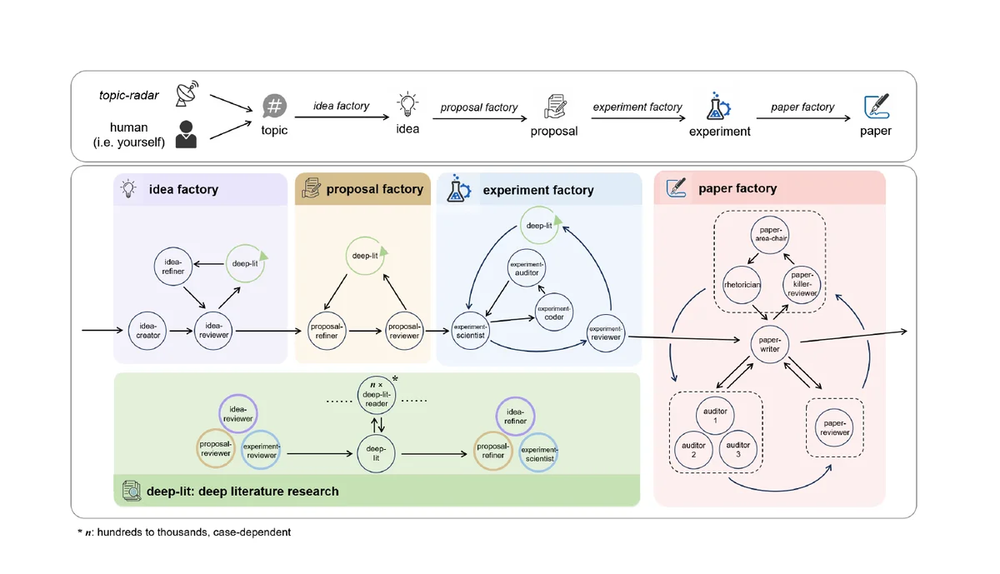
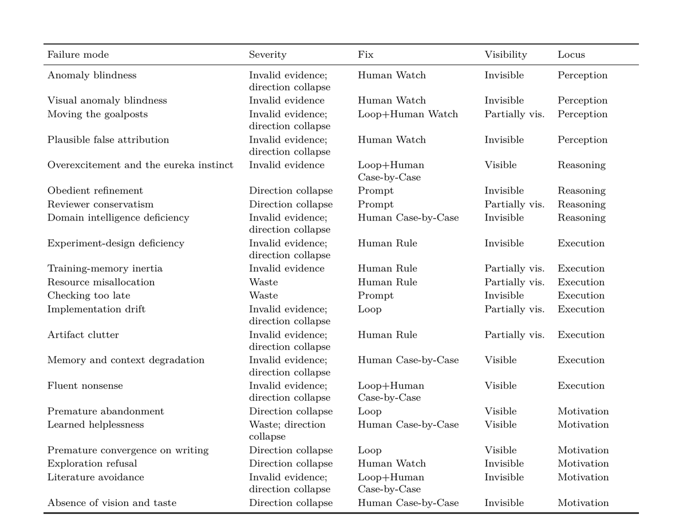

The world has entered the age of agents. But the way we write agent prompts is still untamed: long, brittle, and improvised, with no shared rules of thumb. Agon starts from a simple question. What would research look like if prompting were treated as an engineering discipline instead of an art?
Our answer is Agon, a massively parallel, omnidisciplinary, zero-code research system that runs scientist, coder, and auditor loops across more than ten domains, with no human writing a single line of experimental code. Built on six design principles, it delivers a full AI Scientist with a fraction of the prompt surface of comparable systems, and the same engine transfers across scientific fields with nothing changed but the input files. Its deployments also surface many intriguing phenomena, including agent emergence, where the orchestrated agents discover capabilities and research directions that no human prescribed. Our dream is simple: human navigates, AI drives.
Agon is built on six principles for autonomous research. The cornerstone is Prompt Economy, and the rest follow from it.
These principles reinforce each other. Prompt Economy makes a compact set of reusable roles valuable, Minimal Prompts and Future-Facing keep that prompt surface small and durable, OmniDisciplinary and Massive Parallelism define the scope, and Zero-Code handles the dispatch that scale demands.
Prompt Economy is not just a slogan. It shows up in the numbers. With only 18 roles and the leanest prompt surface of any system in its class, Agon does more with a fraction of the prompt code, while its competitors balloon to dozens of roles and megabytes of brittle instructions.
| System | Roles | Prompt KiB |
|---|---|---|
| AI Scientist v2 | ~110 | 302.4 |
| ARIS | 79 | 1157.4 |
| AutoResearchClaw | 78 | 1297.5 |
| Agon | 18 | 230.6 |
Agon runs as a chain of factories: idea, proposal, experiment, and paper. Together they carry a research project from a one line topic all the way to a finished manuscript. Each factory is a generation and review loop. One agent creates, an independent critic on a fresh context tries to break it, and nothing advances until it survives. A deep literature engine reads the field so that ideas do not collide with prior work, and the entire pipeline is orchestrated by prompts rather than workflow code. In the longest observed run, Agon worked independently for 30 days without any human intervention.
The flip side of automation is knowing its limits. Agon's deployments expose a whole zoo of failure modes, which we organize into a four axis taxonomy along severity, fixability, visibility, and capability locus (Perception, Reasoning, Execution, Motivation). The taxonomy draws a sharp line. On one side are the failures the adversarial loops can catch and repair on their own. On the other are the "invisible" ones, such as anomaly blindness, plausible false attribution, and premature abandonment, that no agent can see and only a human scientist can catch. This is the boundary where human navigates, AI drives.

The failure mode taxonomy. Every observed failure is mapped along severity, fix path, visibility, and capability locus, separating what the loops can fix from what only a human can catch.